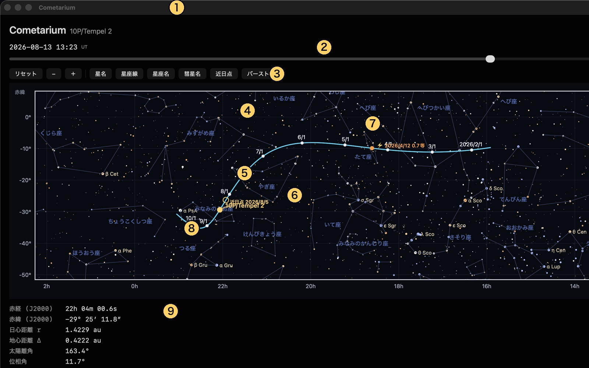
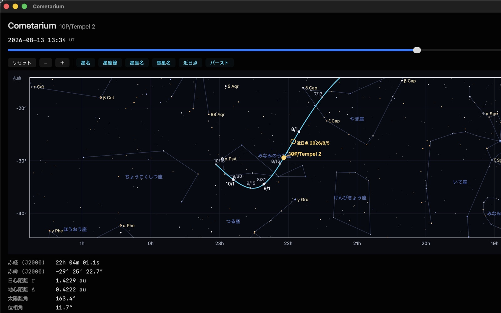
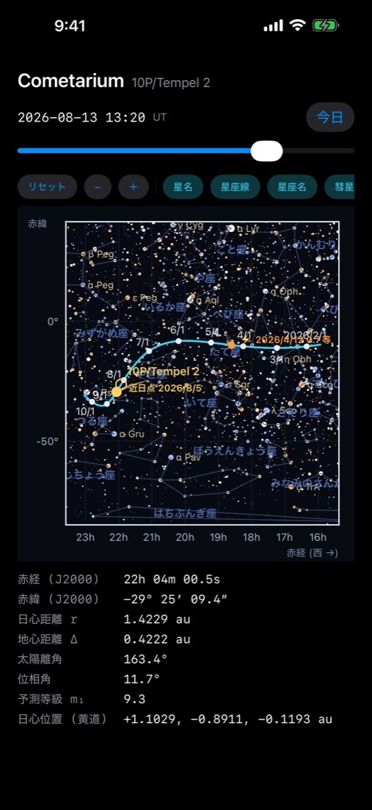
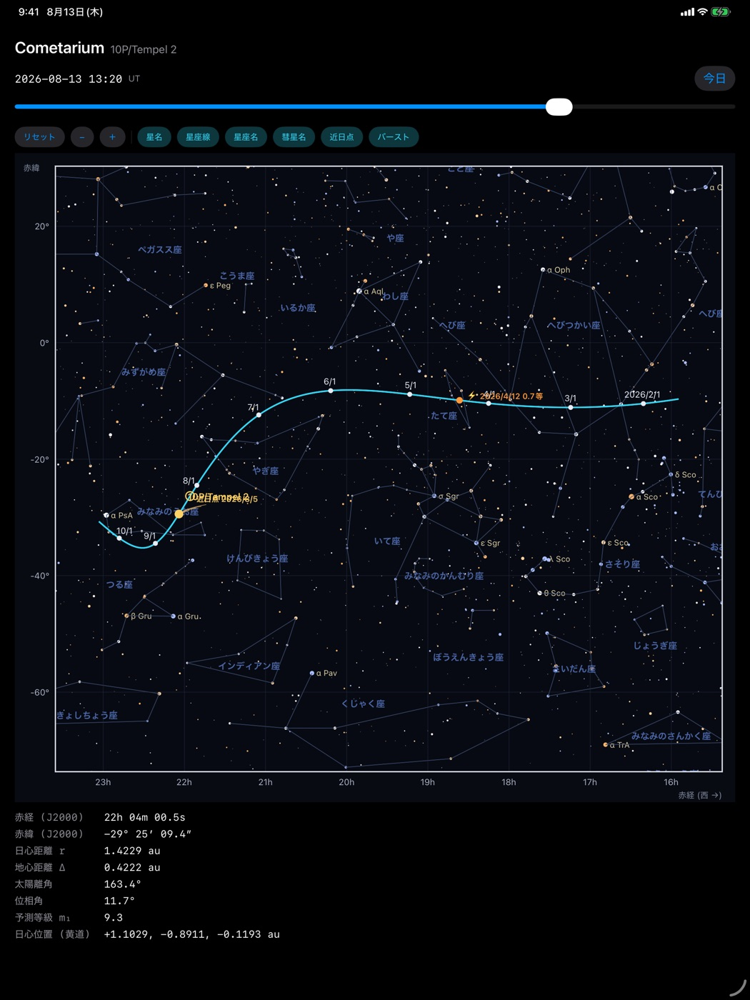

Cometarium は、彗星がいつ・どこに見え、どんな尾を引くのかを描く天文アプリです。 背景の星は実際の星表(Bright Star Catalogue、6.5 等まで)、彗星の位置は NASA/JPL の 軌道解を出発点にした N 体積分の結果で、尾は太陽光の輻射圧と太陽風のモデルから 計算しています。通信は一切行いません。必要なデータはすべてアプリに入っています。
無料版に収録されているのは 10P/Tempel 2 です。2026年8月5日に近日点を通過し、 地球に 0.4 天文単位まで近づく、この回帰でよく見える周期彗星です。

| 番号 | 名称 | 内容 |
|---|---|---|
| ① | アプリ名と対象彗星 | いま表示している彗星。無料版は 10P/Tempel 2 |
| ② | 日付スライダ | 収録期間内の任意の日時へ移動。起動時は「今日」 |
| ③ | 表示切替 | リセット・縮小 −・拡大 ＋ と、6つの表示レイヤー |
| ④ | 天球経路 | 収録期間の彗星の通り道(水色) |
| ⑤ | 日付目盛 | 経路上の日付。大きい丸が月初、小さい丸が中間の日付 |
| ⑥ | 近日点 | 太陽に最も近づく点と、その日付 |
| ⑦ | バースト | 突発的な増光(アウトバースト)が観測された位置・日付・増光量 |
| ⑧ | 現在位置 | ②で指定した日時の彗星。ダスト尾とプラズマ尾つき |
| ⑨ | 現在値 | その日時の位置・距離・明るさの数値 |
背景の星の色は B−V 色指数(青白い星ほど高温、オレンジの星ほど低温)、 大きさは実視等級に対応します。星座線と星座名も表示できます。
| したいこと | Mac | iPhone / iPad |
|---|---|---|
| 日付を変える | スライダをドラッグ | スライダをドラッグ |
| 今日に戻す | 「今日」ボタン | 「今日」ボタン |
| 拡大・縮小 | ＋ / − ボタン | ＋ / − ボタン、または2本指のピンチ |
| 視野を動かす | 図の上をドラッグ | 図の上を1本指でドラッグ |
| 全体表示に戻す | 「リセット」 | 「リセット」 |
| ラベルを動かす | ラベルをつまんでドラッグ | ラベルを指でドラッグ |
ラベルはドラッグで動かせます。「彗星名」「近日点」「バースト」のラベルは、 近日点の前後など重なりやすい時期があります。読みにくいときはつまんで空いた場所へ 移してください。「リセット」で元の位置に戻ります。
| ボタン | 表示されるもの |
|---|---|
| 星名 | 明るい星のバイエル符号(例: α CMa) |
| 星座線 | 星座の結び線 |
| 星座名 | 星座の名前。狭い場所では自動で間引かれます |
| 彗星名 | 現在位置の横に出る彗星名 |
| 近日点 | 近日点の印と日付 |
| バースト | アウトバーストの印と日付・増光量 |
横軸は赤経、縦軸は赤緯(いずれも J2000.0)です。星図の慣習に従い、 赤経は右へ行くほど小さくなります(西が右)。南の空を見上げたときと同じ向きです。
現在位置には尾が描かれます。オレンジ色の扇はダスト尾(同じ大きさの塵が描く 曲線＝シンダインの束)、水色の線はプラズマ尾です。塵は太陽光の輻射圧で押し流されて 曲がり、プラズマは太陽風にほぼ沿ってまっすぐ伸びます。縮小表示では点にしか見えないので、 拡大してご覧ください。

日付目盛の間隔は「彗星が画面上でどれだけ速く動くか」で決まります。そのため 拡大すると、月初だけだった目盛が半月ごと・10日ごと…と自動的に細分されます。 暗い星も増え、星名も多く出ます。ラベルが重なる場所では経路の反対側へ逃がし、 そこも詰まっていれば点だけを残します。
| 項目 | 意味 |
|---|---|
| 赤経・赤緯 (J2000) | 天球上の位置(地心視位置) |
| 日心距離 r | 太陽から彗星までの距離(au。1 au ≒ 1億4960万 km) |
| 地心距離 Δ | 地球から彗星までの距離(au) |
| 太陽離角 | 地球から見た太陽と彗星の離れかた(0°=太陽と同方向、180°=真夜中に南中) |
| 位相角 | 彗星から見た太陽と地球のなす角。小さいほど「満月」の位置関係 |
| 予測等級 m₁ | 全等級の予測値。COBS の観測に当てはめた光度式による |
| 日心位置(黄道) | 太陽を原点とする黄道座標の x, y, z(au) |
距離と位置は光行時間を補正済みです。表示されているのは「いまその光が地球に 届いている瞬間の彗星」の値です。


描かれる内容はどの機種でも同じです。iPad では横幅が広いぶん星座名や星名が多く出ます。 表示切替のボタン列は、画面が狭いときは左右にスクロールします。
| 項目 | Cometarium(無料) | Cometarium Pro |
|---|---|---|
| 対象彗星 | 10P/Tempel 2 のみ | 収録彗星すべて |
| 天球経路・現在値 | ○ | ○ |
| 光度曲線・尾の形状・観測可能時間帯・太陽系軌道 3D | ○ | ○ |
| 太陽系 3D の比較彗星 | 220P のみ | 自由に追加 |
| 写真の重ね合わせ・測光・WCS 解析 | — | ○ |
| ボートルの生存限界図 | — | ○ |
| 内容 | 出どころ |
|---|---|
| 軌道と天体暦 | NASA/JPL Horizons・SBDB・NAIF SPICE(DE440 / sb441) |
| 軌道の積分 | ASSIST(REBOUND 系)による N 体積分。惑星と主要小惑星の摂動、非重力加速度を含む |
| 光度と増光 | COBS(Comet Observation Database)の観測に基づく光度式の当てはめ |
| 星表 | Bright Star Catalogue(V ≤ 6.5) |
| 尾の形状 | Finson–Probstein のシンダイン/シンクロン、Burns–Lamy–Soter の β、太陽風による吹き流しモデル |
Credit: NASA/JPL-Caltech. Comet magnitude data courtesy of COBS Comet Observation Database.
Q. オフラインでも使えますか。 はい。位置計算も星図もアプリ内で完結し、通信は行いません。
Q. 表示できる期間は。 彗星ごとに、その回帰の前後をカバーする期間が収録されています。スライダの左端・右端がその期間です。
Q. どのくらい正確ですか。 位置は JPL の軌道解を出発点にした N 体積分で、実測とほぼ一致します。ただし彗星の明るさは本質的に予測が難しく、実際の観測とずれることがあります。
Q. ラベルが重なって読めません。 ラベルはドラッグで移動できます。「リセット」で元に戻ります。
Q. 彗星を増やせますか。 無料版は 10P/Tempel 2 専用です。ほかの彗星は Cometarium Pro でご利用ください。
Cometarium shows where a comet is, when it can be seen and how its tails lie on the sky. The background stars come from the Bright Star Catalogue (to V = 6.5), the comet's position from an N-body integration started from the NASA/JPL orbit solution, and the tails from radiation-pressure and solar-wind models. The app never uses the network: everything it needs is bundled. The free edition covers 10P/Tempel 2, which passed perihelion on 5 August 2026 and comes within 0.4 astronomical units of Earth.
See figure 1 above. ① the comet on show, ② the date slider (opens at today), ③ reset / zoom out / zoom in and six display layers, ④ the comet's path across the sky, ⑤ dates along the path, ⑥ perihelion, ⑦ an observed outburst, ⑧ the comet at the chosen instant with its dust and plasma tails, ⑨ the numbers for that instant.
Star colour follows the B−V colour index (blue-white is hot, orange is cool) and star size follows visual magnitude.
Right ascension runs along the bottom and increases to the left, as the sky does when you face south; declination runs up the side. Both are J2000.0. The orange fan at the comet is the dust tail (a family of syndynes — the curves traced by grains of one size), and the cyan line is the plasma tail. Zoom in to see them; at full-path scale they are smaller than the marker.
The date ticks subdivide themselves: their spacing follows how fast the comet moves on screen, so zooming in turns months into halves of months and then into ten-day steps (figure 2).
| Field | Meaning |
|---|---|
| 赤経 / 赤緯 (J2000) | Right ascension and declination, geocentric apparent place |
| 日心距離 r | Sun–comet distance (au) |
| 地心距離 Δ | Earth–comet distance (au) |
| 太陽離角 | Solar elongation (0° = towards the Sun, 180° = opposite it) |
| 位相角 | Phase angle, Sun–comet–Earth |
| 予測等級 m₁ | Predicted total magnitude, from a light curve fitted to COBS observations |
| 日心位置(黄道) | Heliocentric ecliptic x, y, z (au) |
Distances and positions are corrected for light time: they describe the comet at the moment the light now reaching Earth left it.
The free edition follows 10P/Tempel 2 only, and in the solar-system 3D view it can add 220P alongside it. Cometarium Pro carries the whole catalogue, plus photograph overlay with aperture photometry, FITS/WCS handling and plate solving, and the Bortle survival chart. Version 1.0 ships the sky path and the ephemeris readout; the other panels arrive in updates.
Orbits and ephemerides: NASA/JPL Horizons, SBDB and NAIF SPICE (DE440, sb441). Integration: ASSIST/REBOUND, including planetary and main-belt perturbations and non-gravitational acceleration. Photometry: COBS Comet Observation Database. Stars: Bright Star Catalogue. Tails: Finson–Probstein syndynes and synchrones, Burns–Lamy–Soter β, and a solar-wind windsock model. Credit: NASA/JPL-Caltech; comet magnitude data courtesy of COBS.
本アプリはいかなるデータも収集・送信しません。 / The app collects and transmits no data whatsoever. プライバシーポリシー / Privacy Policy